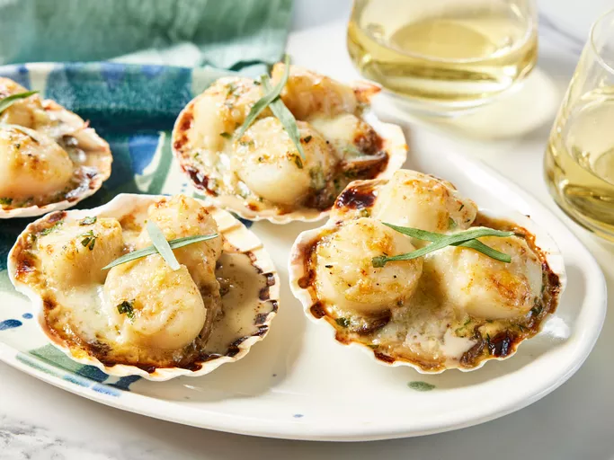

Home
How to make Coquilles Saint-Jacques

Description
Coquilles Saint-Jacques is one of the world's most delicious dishes. It's rich and decadent, and yet still light. For something fancy, this is pretty easy to make!
Ingredients
- 2 tablespoons unsalted butter
- ½ cup diced shallots
- ½ pound white button mushrooms, sliced
- salt and freshly ground black pepper to taste
- 1 cup white wine
- 1 pound sea scallops
- ½ cup heavy whipping cream
- 1 egg yolk
- 2 teaspoons minced fresh tarragon
- 1 teaspoon lemon zest
- 1 pinch cayenne pepper, or to taste
- 4 large oven-safe scallop shells
- ¼ cup shredded Gruyere cheese
- 1 pinch paprika
- 8 fresh tarragon leaves
Steps
- Gather all ingredients.
- Melt butter in a large skillet over medium heat; add shallots and sauté until translucent, 5 to 8 minutes. Stir in mushrooms, salt, and black pepper; increase heat to medium-high and cook, stirring often, until mushrooms are golden brown, about 10 minutes. Pour wine into the pan and bring to a boil while scraping the browned bits of food off the bottom of the pan with a wooden spoon; bring to a simmer.
- Gently place scallops into wine and poach in the mushroom mixture until barely firm, about 2 minutes per side; transfer scallops to a bowl. Strain mushroom mixture into another bowl, reserving mushrooms and cooking liquid separately.
- Return strained liquid to skillet, pour in any accumulated juices from scallops, and stir in cream. Bring to a boil and cook, stirring often, until cream sauce is reduced by about half, about 10 minutes. Turn off heat and let mixture cool for 1 minute.
- Quickly whisk egg yolk into cream sauce until combined. Transfer skillet to a work surface (such as a heatproof countertop or cutting board) and stir 2 in teaspoons tarragon, lemon zest, and cayenne pepper.
- Divide mushroom mixture into scallop shells, spreading it out to cover the bottoms of shells; place about 3 scallops onto each portion. Spoon cream sauce over scallops to coat; let sauce drizzle down into mushrooms. Sprinkle lightly with Gruyère cheese and paprika.
- Preheat the oven's broiler. Slightly crinkle a large sheet of aluminum foil and place onto a baking sheet. Place filled shells onto foil and press lightly to help them stay level.
- Broil in the preheated oven until bubbling and cheese is lightly browned, 5 to 6 minutes.
- Transfer to serving plates lined with napkins to prevent shells from tipping; garnish each portion with 2 crossed tarragon leaves.``